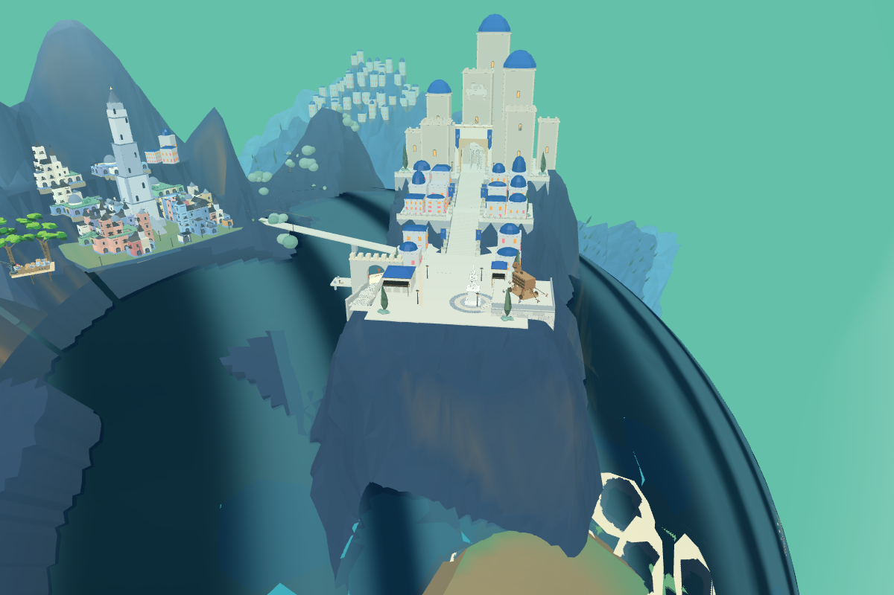
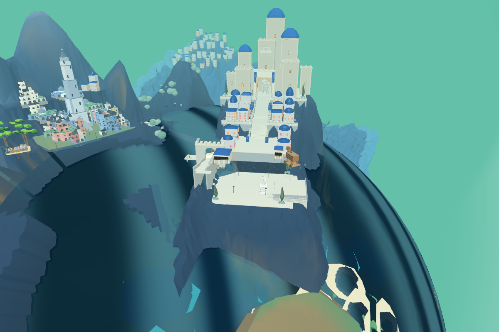
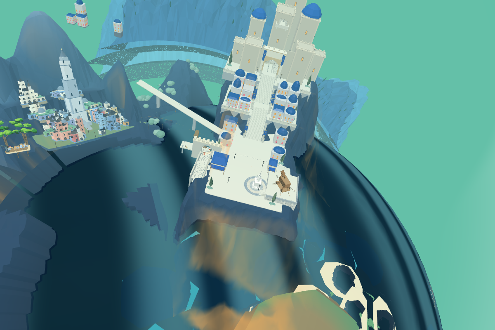
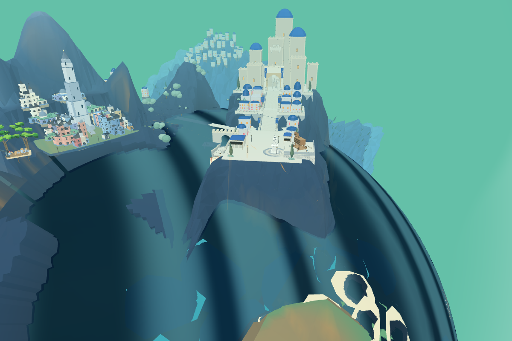

这些是实际原游戏在独立浏览器中的临时几何试验，不是正式8931或Godot的新版本。正式版本保留已验证的Blender岩层。相机一致，冻结动画，仅用于大结构判断。


逐顶点试验未正确处理实例化摆件、海港独立节点及所有连接；有悬空连接，不能用于游戏。早期截图木马还未随位移，脚本已修正查找到scene层木马；本图仅作为失败诊断，未重新声称验收。

内部建筑形状保留，但后山、桥接口与构图被带偏；没有通路验收。

新城前景地位削弱，山脚仍未正确衔接，旧城桥端尚断开。
直接重排前港—台阶—广场的层次。当前港口作者z58、广场z71.5，码头偏后；应按目标把登陆入口放到前侧海岸，再决定广场标高与连接主城的步道。保留原角色、木马、两城朝向及原营地。必须重建真实地形/桥/路线并过两端通行，不能将本页候选当作正式交付。